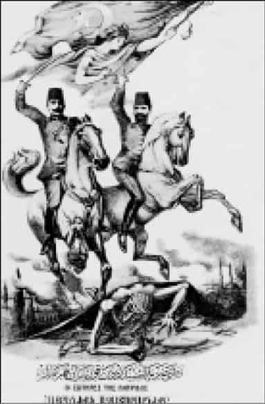
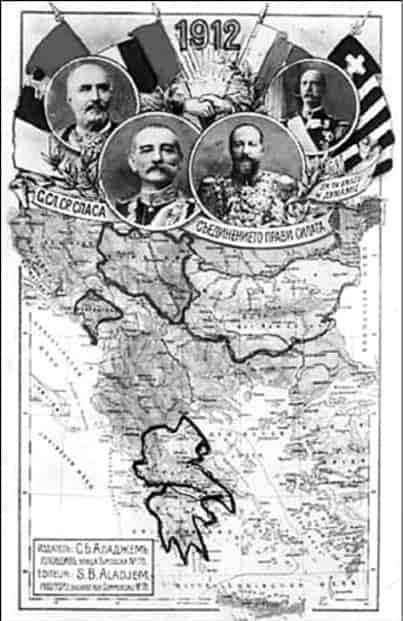
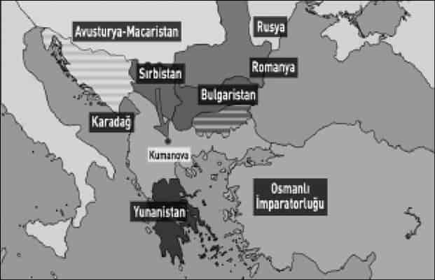
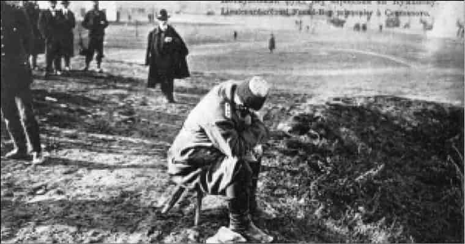
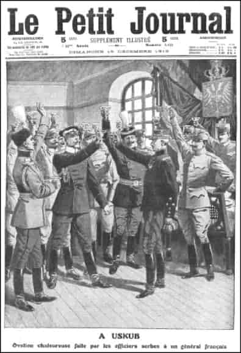
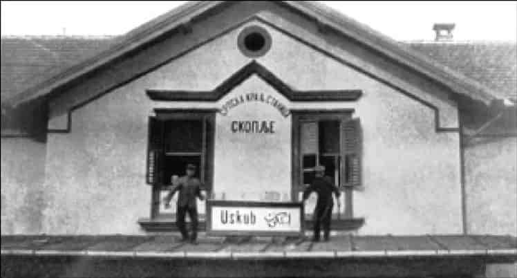
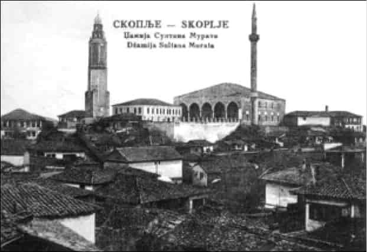
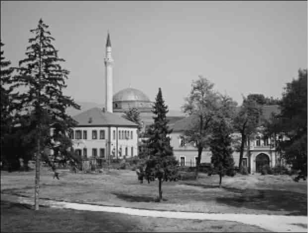
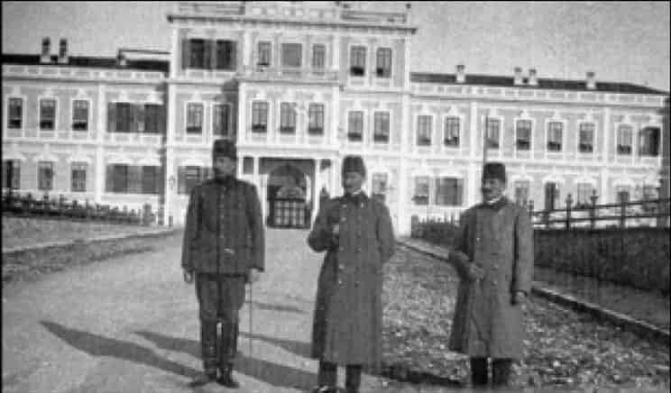
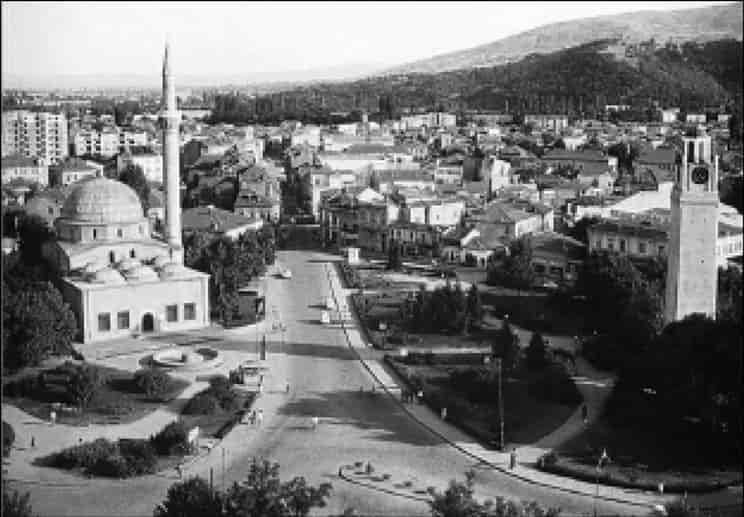

2

Batı Rumeli’nin kaybı
1912-1913 Balkan Harbi’nde Osmanlı dört cephede savaştı. Savaşta Başkumandan Vekili Nazım Paşa’dır, vekil denilmesinin sebebi, devlet başkanı olarak padişahın başkumandan sayılmasıdır. Adriyatik’ten İstanbul’a kadar büyük bir alanı kapsayan Osmanlı Balkanları’nın doğu kesiminde, Bulgar hücumuna karşı Trakya’yı savunmakla görevli Doğu Ordusu vardır. Kumandanı Abdullah Paşa’dır. Dört kolordu ve bir süvari tümeninden oluşmaktadır.
Görevi Bulgar saldırısı karşısında Kırcaali, Edirne ve o zaman Kırkkilise denilen Kırklareli hattını savunmaktır. Yani geniş anlamıyla Trakya’yı...
Edirne bir “müstahkem mevki” yani özel olarak tahkim edilmiş bir savunma alanıdır. 17 tabya ve 50.000 askerle savunulacaktır. Edirne kumandanı, kahraman Şükrü Paşa’nın şanlı bir savunma savaşı yaptığını, fakat Kırklareli ve Lüleburgaz muharebelerinde Osmanlı ordusunun utanç verici bozgunlara uğradığını, Bulgar ordusunun İstanbul’a 50 kilometre mesafedeki Çatalca’ya kadar geldiğini göreceğiz.
Şimdi göreceğimiz Batı Rumeli cephesinde ise Sırp, Karadağ ve Yunan ordularıyla savaşılacaktır. Osmanlı Batı ordusunun görevi Batı Rumeli’yi, yani Yanya’yı, İşkodra’yı, Vardar Ovası’nı, Kosova’yı, Priştine’yi, Manastır’ı, Selanik’i, Kavala’yı savunmaktır. Buna göre, Osmanlı Batı ordusu biri Sırbistan sınırında, biri Bulgaristan sınırında, öbürü Yunan ordusuna karşı Epir ve Teselya’da mevzilenmiş üç kolordudan oluşmaktadır. Karadağ’a karşı bir piyade, iki redif, yani yedek asker tümeni konuşlanmıştır. Karadağ ordusunun saldıracağı İşkodra ile Yunan ordusunun saldıracağı Yanya müstahkem mevkilerdir, tahkim edilmişlerdir. Yanya ve İşkodra’nın kahramanca savunma yaptıklarını göreceğiz.
Batı ordusunun kumandanı Ali Rıza Paşa’dır.
Buradaki Osmanlı askeri gücünün belkemiğini oluşturan Vardar ordusunun kumandanının Zeki Paşa olduğunu da belirtelim.
Batı cephesinde de Osmanlı ordusu bozguna uğrayacak, Kosova’ları, Üsküp’leri, Manastır’ları, Selanik’leri bırakıp çekilecektir. Selanik, tek kurşun atmadan Hasan Tahsin Paşa tarafından Yunan ordusuna teslim edilecektir.
Osmanlı dört cephede savaşacaktır:
● Trakya’da Bulgarlara karşı,
● Makedonya’da Bulgar, Sırp ve Yunanlara karşı,
● Kosova ve Kuzey Arnavutluk’ta Sırp ve Karadağlılara karşı,
● Güney Arnavutluk’ta Yunanlara karşı...
En büyük tahribat Trakya ve Makedonya’da olmuş, en büyük acılar Trakya ve Makedonya’da yaşanmıştır. Bulgarlar Trakya’yı, Sırplar Kosova, Manastır, Ohri ve Üsküp’ü, Yunanlar Selanik’i alacaklardır.
Osmanlı içinden çöküyordu
Makedonya’da çetelerle savaşan genç subaylar o metotları benimsemiş, Abdülhamid’i İkinci Meşrutiyet’i ilana mecbur etmek için dağa çıkmışlardır. Enver ve Niyazi Beyler bunların en ünlüleridir. Meşrutiyet ilan edilince “Kahraman-ı hürriyet” olarak yüceltilmişlerdir.

Kahraman-ı hürriyet Enver ve Niyazi Beyler, Türkçe, Fransızca, Ermenice, Rumca.
Meşrutiyet’in getireceği özgürlük, eşitlik ve kardeşlik sayesinde bütün dini ve etnik unsurlar kardeş olacaktı. Rum, Bulgar ve Ermeni komitacılarıyla İttihatçılar, hocalarla papazlar kucaklaşıyor, ülke adeta bir hürriyet histerisi yaşıyordu. Bu cicim ayları çok uzun sürmedi.
Şükrü Hanioğlu: Tabii Meşrutiyet’ten çok büyük beklentiler vardı. Dediğiniz gibi işte herkes ümit ediyordu ki bir anda imparatorluğun bütün sorunları ortadan kalkacak ve bütün bu sorunlar çözümlenecek; öyle olmadı. Şimdi burada temel sorun, özellikle Makedonya’da mücadele yürüten Osmanlı unsurlarının talep çıtalarını çok yüksek tutmalarıydı. Yani bunlar çok yüksek taleplerde bulunuyorlardı ve 1908 sonrasında kendilerine verilen Osmanlılık fikrini, yani Osmanlılık idealini de kendi taleplerini karşılayacak bir çözüm olarak görmüyorlardı. Dolayısıyla Meşrutiyet’in getirdiği parlamenter temsile karşı mesela büyük kota sorunları çıktı. Yunanlar kendilerine Meclis’te ayrılan kotaları beğenmediler. Ve daha fazla kota istediler.
İttihat ve Terakki ilk başta genel seçimler olsun, herkes adayını göstersin, isteyen kazansın tipi bir politikayı benimsedi. Fakat diğer unsurlar buna diyorlardı ki, bu olursa birçok yerde hep Türkler-Müslümanlar kazanır, onun için bize yüksek kotalar verilmesi lazım... Bu çok ciddi tartışma ilk günden başladı, tabii burada Osmanlılığın tanımının da yarattığı birtakım sorunlar oldu. Bunu da vurgulamak lazım.
Yani bir taraf talep çıtasını çok yüksek tutuyordu ama öbür taraf da aksine... Mesela İttihat ve Terakki’den İstanbul mebusu olarak Meclis’e girecek olan Hüseyin Cahit’in Tanin’de yazdığı o meşhur “Millet-i hâkime” makalesi... Orada diyor ki, kim ne derse desin bu ülkede hâkim millet Türklerdir ve Türkler olacaktır. Karşı taraf da buna diyor ki, bu çeşit bir Osmanlılık Türkleştirme politikasıdır, yani biz bunu kabul etmeyiz! Dolayısıyla meşrutiyet zannedildiği gibi sorunları Osmanlılık paydasında çözmedi, çözemedi. Çünkü bir taraf dediğim gibi talep çıtasını çok yükseltti, öbür taraf da Osmanlılığı fazlasıyla Türklükle doldurdu. Diğer taraf da bunu Türkleştirme politikası olarak gördü ve maalesef 1908’den sonra balayı dönemi çok kısa oldu. Biliyorsunuz; işte komitacılar dağlardan iniyor, şehirlerde valiler onları karşılıyor, ziyafetler veriyor, ama daha sonra 1908 öncesini aratan bir çatışma ortamı doğdu.
Osmanlı’nın zaafı ortaya çıkmaya başlamıştı.
5 Ekim 1908: Meşrutiyet’ten iki ay sonra, Girit Meclisi, adanın Yunanistan’a iltihak ettiğini ilan etti... Aynı gün Avusturya-Macaristan İmparatorluğu, Osmanlı’nın Bosna-Hersek eyaletine el koydu! 1908’de Meşrutiyet ilan edilince Osmanlı Mebusan Meclisi’ne doğal olarak Bosna-Hersek’ten de milletvekili seçilmişti. Bunun Bosna-Hersek’le Osmanlı Devleti arasındaki bağı daha da kuvvetlendirecek olması, Avusturya-Macaristan İmparatorluğu’nu endişelendirmişti.
Osmanlı Devleti bir şey yapamadı. 2.5 milyon altın lira karşılığında Bosna Hersek’teki egemenliğini Avusturya’ya bırakmak zorunda kaldı!1
6 Ekim 1908: Bulgaristan Prensliği, Rusya ve Avusturya’nın desteğiyle bağımsızlığını ilan etti. Zaten Osmanlı ile tek bağlantısı, sembolik vergi ödemesiydi. Buna karşılık Bulgaristan’ın vereceği 25 milyon ruble tazminat, Osmanlı Devleti’nin 1877-78 Savaşı’ndan kalan Rusya’ya tazminat borcundan düşüldü. Bulgaristan’ın arkasında Rusya’nın olduğu bir kere daha görüldü. Balkan Savaşları’nda Rusya başrollerdedir.
Devlet dışarıda bu krizlerle boğuşurken içeride ağır sorunlarla sarsılmaktadır. Genç subayların dağa çıkmasıyla ilan edilen Meşrutiyet döneminde ordu büsbütün politikaya batmıştır. Bunun bir dışavurumu, “31 Mart Vakası” olarak bilinen olaydır; 13 Nisan 1909’da alaylı askerlerin isyanıdır. Yeni nesil subayların yönetimindeki Hareket Ordusu tarafından bastırılacaktır. Ordu, mektepli ve alaylı subaylar olarak bölünmüştür. Sadece bu değil, ordu İttihatçı olan ve olmayan subaylar olarak da iki hasım parti haline gelmiştir. İttihatçı subaylara karşı orduda Halaskâr Zabitan gruplaşması oluşmuştur.
Dahası, sadece Rum ve Bulgar milliyetçilikleri değil, aynı zamanda Müslüman askerler arasında da yavaş yavaş etnik farklılıklar su yüzüne çıkmaya başlamıştır. Daha Abdülhamid zamanında Harbiye Mektebi’ndeki Arap kökenli öğrenciler arasında Arap milliyetçiliği ortaya çıkmakta, Türk öğrencilerle tartışmalar yaşanmaktadır. Harbiye ve Harp Akademisi’nde öğrenci ve kurmay subay olarak bulunan Kâzım Karabekir’den birkaç anı aktaralım:
Bu sene [1905] sınıfımızdaki Şamlı ve Bağdatlı arkadaşlarda mühim bir his değişikliği var. Türklere karşı soğuk duruyorlar. Ayrılık muhabbetlerine şahit oluyorum.
Bir gün ordu teşkilatı hocası “Yemen isyanlarına obüs topları götürüp âsi Arapların kafasını kırmalı” dedi. Paydosta Arap arkadaşlar müthiş bir hal aldılar. Arapça birbirlerine bunun bir hakaret olduğunu izahla Türklere küfür ve beddua ediyorlardı. Kendilerini teskin için hayli uğraştım. Muallim erkân-ı harp kaymakamı [öğretmen kurmay yarbay] Suphi Bey’i protesto etmeye, ona hakaret etmeye kadar karar veriyorlardı. Durdurdum.
Sınıfımızda da Arap kurmay adayı on kadar... Bunların ifsat edildikleri kanaatindeyim.
Kâzım Karabekir Harbiye ve Harp Akademisi’nde Türk ve Arap öğrenciler arasında sık sık tartışmalar çıktığını, Arap öğrencilerin “Türklere lanet yağdırdığını”, Arap bağımsızlığını savunduklarını anlatır. “Arnavut neferlerde bile soğukluk görüyorum” diye kaydeden Karabekir, Arnavut öğrencilerin de “bozulduğunu... bereket versin aklı erenlerin Türk milliyetine bağlı” olduğunu anlatır.2
Ordudaki İttihatçı ve Halaskâr Zabitan gruplaşmasında Arnavut subaylar Halaskâr grubunda yer almaktadır. Ordunun birliğinde hem siyaseten hem de etnik olarak da çatlamalar meydana gelmiştir. Arnavut milliyetçiliğinin Balkan Harbi’nde Batı ordusunun bozguna uğramasında nasıl rol oynadığını göreceğiz.
Türk, Rum, Ermeni, Bulgar, Arnavut bütün Osmanlıların sevinç gösterileriyle ve kucaklaşarak ilan edilen Meşrutiyet’in cicim ayları geçtikten sonra, geçmişte Abdülhamid’in baskı altında tuttuğu ayrılıkçı milliyetçilik akımları yeniden hareketlenmiştir. Osmanlıları birleştireceği düşünülen Mebusan Meclisi, yani Osmanlı parlamentosu etnik milliyetçi kavgalara sahne olmaktadır.
14 Nisan 1909: Adana’da patlak veren, “Ermeni Patırtısı” denilen korkunç kanlı çatışma, çok daha feci olayların habercisidir.
27 Nisan 1909: Adana faciasından iki hafta sonra, Abdülhamid tahttan indirilmiş, Sultan Reşad padişah yapılmıştır. Sultan Reşad, iyi niyetli fakat âciz bir ihtiyardır. İttihat ve Terakki kontrolsüz güç haline gelmektedir.
2 Temmuz 1909: İttihatçıların baskısıyla askeri tensikat, yani kadro düzenlemesi kanunu çıkarıldı, bunu Askeri Emeklilik ve Tasfiye Kanunu izledi. Balkan Savaşı’nın kumandanlarından Mahmut Muhtar Paşa’nın yazdığı gibi, ordunun idaresi “pek genç ve vukufsuz ve tecrübesiz ihtilalci subaylar”ın eline geçmişti.3
Şükrü Hanioğlu: Tabii, 1908’de iki husustan bahsetmek lazım. Bir kere ordu içindeki tasfiyelerin bunda bir rolü var. İkinci olarak, ordunun çok fazla siyasete bulaşmasının bir rolü var. Yani ordu içinde birbirine selam vermeyen subaylar, işte fesini takış şekline göre İttihatçı mı, İtilafçı mı olduğu anlaşılan subaylar... Arnavut subayların özellikle Halaskâr Zabitan olayında görüldüğü gibi bir grup olarak hareket etmeye başlamaları... Bunlar orduda çok ciddi sorunlar yarattı.
Tensikatın da rolü oldu burada. Gerçi Abdülhamid döneminde biliyorsunuz özellikle alaylı subaylar çok fazla rütbe almışlardı, çok hızlı yükselmişlerdi. Ve gerçekten ordu içinde liyakate fazla önem verilmemeye başlanmıştı ki bu konuda saraya bizzat Serasker, ordunun başında olan insan tarafından yazılan pek çok vesika da vardır. Yani, bizzat Serasker diyor ki, yapmayın, böyle saraydan rütbe verilmesin insanlara... Böyle yüzbaşı olacak insanlar general oluyorlar, bunun sonucunda biz orduda emir komutayı düzenleyemeyiz, yani bu işe böyle bir sınır getirilsin...
Burada hakikaten işin ucu çok kaçırılmıştı. İlk başta rütbelerde böyle bir tensikat yani düzenleme yapıldı biliyorsunuz, ciddi bir rütbe azaltılması oldu.
Ordu gençleştirildi. Bu elbette iyi bir adım, bir reformdu. Fakat orduda sarsıntı yaratmayacak yumuşak bir geçiş yerine, sert tavırla orduda sarsıntı yaratılmıştı. Amacı doğru olan bir reform bu yüzden uygulamada kötü sonuçlar verdi.
Şükrü Hanioğlu: Bu orduda da ciddi tartışmalar yarattı. Daha sonra alaylılara yönelik büyük bir tensikat yapıldı, bu da önemliydi çünkü alaylı subaylar günümüz Türk Silahlı Kuvvetleri’ndeki uzman personel gibi, yıllar yılı savaşın içinde, özellikle bu Makedonya’daki çeteciliğin içinde yer alan ve işi gerçekten böyle sahasında öğrenmiş insanlardı. Yani bu alaylı subayların büyük çapta tasfiyesi de çok ciddi bir ara kademe boşluğu yarattı Osmanlı ordusunda.
Subay kadrosunda da tasfiye oldu, fakat benim görebildiğim önemli olay, bu ara sınıfın ortadan kalkması oldu. Osmanlı ordusunda çok ciddi bir disiplin sorunu vardı Balkan Harbi’ne geldiğimizde.
Arnavutlarda milliyetçilik
Bu şekilde kumanda kademesi ve subaylar arasındaki kargaşanın Balkan Harbi’nde nasıl yıkıcı sonuçlar doğurduğunu göreceğiz. Devlet ve ordu bu kargaşa içindeyken bir de Arnavutluk’ta isyan çıktı. Abdülhamid’in hoş tutarak “idare” ettiği Arnavutların ayaklanmasında İttihatçıların sert ve Arnavut kimliğine saygısız davranışları etkili oldu. Yahya Kemal’in yazdığı gibi, “Sultan Abdülhamid Arnavutları seviyordu, nazlarını çekiyordu, hatırlarını sayıyordu.”4 İttihatçılar ise, Arnavutların dil ve kültür taleplerini reddetmek, Arnavut isyanını bastırmak için yapılan askeri harekât sırasında Arnavut köylerinde isyancıları karılarının, kızlarının önünde falakaya yatırmak gibi şiddet politikalarına başvurmak şeklindeki hatalar, zaten başlamış olan Arnavut milliyetçiliğinin Arnavut halkı arasında da taban bulmasına sebep oldu.5 1908 İhtilali yani İkinci Meşrutiyet’in ilanı çok önemli bir dönüm noktasıdır.
Şükrü Hanioğlu: 1908 İhtilali’nden sonra Arnavutların bir iddiası vardı. Diyorlardı ki; bize bu ihtilale katılmamız karşılığında birtakım sözler verildi. Yani denildi ki bize, sizin kültürel haklarınızı tanıyacağız... Bu çok sayıda Arnavut lider tarafından dile getirilen bir konu. Elimizde yazılı bir şey yok ama o kadar çok kişi tarafından dile getiriliyor ki, bir gerçeklik payı olduğunu düşünmek mümkün.
Gerçekten de 1908 İhtilali Arnavutların katkısı olmadan yapılamazdı.
Biz tabii günümüzde, Osmanlı’nın tek takipçisinin Türkiye olduğunu, tek mirasçısının Türkiye olduğunu düşündüğümüz için 1908’i de böyle bir Türk ihtilali olarak düşünüyoruz. Ama 1908 İhtilali’ne katılan askeri birliklerin ve çetelerin çoğunluğunu Arnavutlar meydana getiriyor. Dolayısıyla Arnavutlar bu isyanda, ayaklanmada ve ihtilalde çok büyük bir rol oynadılar. Ama tekrar edeyim yani kendilerinin dediği: “Bize bunun karşılığında istediklerimiz verilmedi.”
Arnavutların temel istekleri; özellikle anadilde eğitim yapılması, Arnavutçanın okullarda kullanılmasına izin verilmesi ve kilisedeki vaazlarda da Arnavutçanın serbestçe kullanılması. Özellikle Ortodoks kilisesinde Yunanca kullanılıyordu, Ortodoks Arnavutlara Patrikhane Arnavutça için izin vermiyordu. Ve bu şekilde Arnavutların başvuruları vardı.
Ve bir de tabii 1910’da Arnavutların Manastır’da bir Alfabe Kongresi oldu. Ondan daha evvel Arnavutların Şemseddin Sami önderliğinde yapılan bir İstanbul alfabesi vardı. Fakat bu çok karmaşık bir alfabeydi. Latin harfleri temelliydi ancak içinde Kiril harfleri de vardı. Yazımı son derece zordu ve bu nedenle Arnavutlar ve 1910’da Manastır’daki kongrede Latin alfabesi temelli bir alfabeye geçme kararı aldılar. Bu da büyük bir gerginlik yarattı çünkü Şeyhülislam bir fetva verdi ve Müslümanlar için Arap alfabesinden başka bir alfabenin caiz olmayacağını söyledi.
Uyanmış olan Arnavut milliyetçiliğini Abdülhamid yumuşak davranışlarla idare ediyordu. Arnavut ileri gelenlerini yanına alıyor, Arnavutların hayatına, kültürlerine müdahale etmiyordu. Meşrutiyet döneminde ise Arnavutların beklentileri yükseldiği gibi, İttihatçılar da sert politikalara başvurdular.
Şükrü Hanioğlu: İttihat ve Terakki de buna çok sert karşı çıktı. Ve Arnavut milliyetçileri ile İttihat ve Terakki arasında çok gergin bir ilişki başladı. Ve hatta mesela Meclis-i Mebusan’da “Arnavutlar” kelimesinin kullanılmasında bile tartışmalar çıktı. Ahmet Rıza Bey, Mebusan Meclisi Reisi olarak Arnavut mebusları uyardı. İşte, “Biz Arnavutlar, biz Arnavutlar diyorsunuz, böyle konuşmayın, bunun yerine şu bölgedeki Osmanlılar deyin” şeklinde müdahalelerde bulundu.
Daha sonra bu “Biz Arnavutlar” tabiri bir slogan haline getirildi Arnavut milliyetçileri tarafından.
İttihatçılar Arnavut isyanını bastırmada da ölçüsüz derecede sert davrandılar. Şevket Turgut Paşa’nın Arnavutluk’taki tatbikatı, doğurduğu tepkilerle Arnavut isyanını körükledi.
Şükrü Hanioğlu: Arnavutlarda aile reisi son derece önemli. Ama bu harekât sırasında köylerde, kasabalarda aile reisleri evlerinin önüne getiriliyor ve eşlerinin, çocuklarının önünde dövülüyor! Şimdi bu gerçekten çok büyük bir travma yaratıyor Arnavutlar üzerinde.
Daha sonra mesela köylere “sizin şu kadar silah teslim etmeniz gerekiyor” diye rakamlar veriliyor. Bunu teslim etmeyen köylülere çeşitli zorbalıklar uygulanıyor ve çok büyük bir etki yaratıyor bu harekât hakikaten. Yani sonunda bastırılmış gibi gözüküyor, fakat öyle bir hınç yaratıyor ki bölgede, bunun sonrasında mesela Arnavutlar Balkan Harbi’nde kaçan Osmanlı askerleri üzerine ateş açtılar. Yani sığınmak isteyenlere. Hatta Fevzi Çakmak bunu hatıratında anlatır, diyor ki; yapmayın, düşman arkamızda, biz sizin burada namusunuzu korumaya çalışıyoruz, askere niye kurşun sıkıyorsunuz? Buna rağmen Osmanlı’nın bölgeye gönderdiği Arnavut askerlerin çoğu firar etti.
Balkanlar’daki hareketlilik Arnavut isyanından ibaret değildi. 9 Mayıs 1910’da da özerk Girit Meclisi, Yunan kralına sadakat yemini etti. 8 Ekim 1912’de Balkan Savaşı başlayacak, 12 Ekim’de Girit, Yunanistan’a katılacaktır!
Osmanlı Balkanları’nda zaten Yunan, Bulgar ve Sırp ulusçuluğu, mektepleriyle, komitalarıyla hareket halindedir.
İngiliz ve Fransız desteğini alan İtalya, 29 Eylül 1911’de Osmanlı İmparatorluğu’na savaş ilan ederek Trablusgarp’a asker çıkardı, aynı zamanda Ege Denizi’nde On İki Adalar’ı işgal ederek Çanakkale Boğazı’na bombardıman yaptı. Enver, Mustafa Kemal, Fethi (Okyar) gibi genç subaylar Libya’da direniş örgütlediler...
Osmanlı Devleti ve ordusu, partilerin arasındaki mücadele ve etnik kavgalarla içeriden çatırdarken, İtalya’nın Libya ve Ege adalarına el koyup Çanakkale’ye bombardıman yapması, Balkan ulus-devletlerine Osmanlı’ya saldırmak için uygun zamanın geldiğini gösterdi.
7 Mart 1912’de Sırbistan ve Bulgaristan, Osmanlı Makedonyası’nı, yani Selanik, Kosova, Manastır ve Edirne vilayetlerini paylaşmak için gizlice anlaştılar, 13 Mart’ta imza attılar. Görünüşte bu masum bir savunma antlaşmasıdır. Ama gizli maddesinde, Balkanlar’da statüko bozulur veya Osmanlı’yla herhangi bir şekilde savaş çıkarsa askeri bakımdan birlikte hareket edecekleri yazılıydı.
Balkan devletleri savaşa hazır!
İtalya’nın Libya’ya saldırması ve Ege Denizi’ne donanma göndermesi Osmanlı’yı zaafa uğratmış, Balkan devletlerine cesaret vermişti. Bulgar Başbakanı ve Dışişleri Bakanı İvan Geshov ve Sırbistan Dışişleri Bakanı Milovan Milanoviç üç aydan beri görüşüyorlardı. Sırbistan’ın karşı olduğu Avusturya’ya ve Bulgaristan’ın karşı olduğu Osmanlı’ya karşı ittifak yapıyorlardı. Bu antlaşmayı sağlayan asıl faktör Rusya’dır. Antlaşmanın hakiki mimarları Sofya’daki Rus Büyükelçisi Anatoli Neklyudov ile Belgrad’daki Rus Büyükelçisi Nicholas Hartwig’tir.6
Balkanlar’daki Slav kökenli Ortodoks devletlerin ipi, Rusya’nın elindedir.
Şükrü Hanioğlu: Rusya için Balkanlar çok önemli bir bölge. Bir de tabii şunu unutmayalım, bütün Balkan devletleri, sonunda Rusya ile Osmanlı devleti arasındaki savaştan sonra bağımsızlığını kazanmıştır. Yani Yunanlar, Rus orduları 1829’da Edirne’ye girdikten sonraki süreçte bağımsızlıklarını kazanmışlardır. Karadağ, Sırbistan, Romanya ve Bulgaristan da böyle.
Bulgaristan 1878’de Osmanlı devletine bağlı özerk prenslik olmuştu ama bu sadece kâğıt üzerinde bir özerkliktir, fiilen Bulgaristan bağımsız olmuştur. Bütün bu devletler de “93 Harbi” dediğimiz 1877-78 Harbi sonrasında bağımsız olmuşlardır. Dolayısıyla Balkan devletleri ile Ruslar arasında böyle çok ciddi bir ilişki söz konusudur. Özellikle Slav olanlar, mesela bunlardan Bulgaristan, Rusya’yı adeta bir ağabey, kendilerini koruyacak ağabey olarak görmüşlerdir. Bir süre Bulgar-Rus ilişkileri 93 Harbi’nden sonra gerginleşmiştir. Daha sonra Stanbulof hükümeti Osmanlılara yanaşıp Rus aleyhtarı bir politika izlemiştir ama genelde Ruslarla bu devletlerin ilişkileri gayet iyi olmuştur. Nitekim Sırbistan’la Bulgaristan savaşını Ruslar durdurmuşlardır. Balkan ittifakında da Ruslar gerçekten çok önemli bir rol oynamışlardır. Belki de Rusların arabuluculuğu olmasaydı bu kadar kanlı bıçaklı olan devletlerin bir araya gelmeleri çok daha zor olurdu.
Rusya’nın kurdurduğu Sırp-Bulgar ittifakına katılma sırası Yunanistan’a gelmişti. 29 Mayıs 1912’de, Bulgaristan’ı ziyarete gelen Yunan Kralı I. Yorgi (George) ve Bulgar Kralı Ferdinand ittifak antlaşması imzaladılar. Gizli madde yine Osmanlı İmparatorluğu’yla savaş konusundaydı.
Sırplar ve Bulgarlar neden Yunanistan’ı aralarına almışlardı? Osmanlı’ya karşı Yunanistan’ın Ege’deki deniz gücüne ihtiyaç duydukları için...
30 Mayıs’ta ittifaka, daima Sırbistan’la birlikte hareket eden Karadağ da katıldı.

Dört Balkan devletinin krallarını gösteren ittifak posteri,
henüz savaş çıkmadan, sınırlar değişmeden önce.
Osmanlı Makedonyası’nı paylaşacaklardır, fakat erken bir pay kavgası çıkmasın diye kimin nereleri alacağı belirtilmemiş, Rus çarının hakemliğine bırakılmıştır.
Balkan ülkeleri arasındaki antlaşma Bulgar ve Yunan kralları tarafından 15 Haziran 1912’de resmen açıklandı. Temmuz ayı ortalarında Bulgaristan Başbakanı Geshov, Sofya’daki Yunan elçisini makamına çağırarak ona şunu söyledi:
Türkler en zayıf dönemlerini yaşıyorlar. Yunan parlamentosu, Giritli milletvekillerini adanın Yunan parlamentosundaki temsilcileri olarak kabul etsin. Böylece Türkleri tahrik etmiş oluruz. Savaşı onların başlatması bizim işimizi kolaylaştırır.
Bulgar Genelkurmay Başkanı General Fitsef ise şöyle konuşuyordu:
Bulgaristan, Sırp ve Karadağlılarla birlikte Türklere karşı savaşmaya kararlıdır. Bu savaşa 500.000 asker, 1.500 top ile başlayacağız. Türklerin 300.000 asker ve 850 topları var. Bulgar askerleri Meriç’te toplanıp Türk topraklarına saldıracaklar.
Yunan elçisi, Bulgar genelkurmay başkanıyla bu görüşmeyi derhal Atina’ya bildirdi ve 48 saat sonra Yunanistan seferberlik hazırlıklarını yapmaya başladı.7
Balkan ülkeleri süratle savaşa hazırlanmaktadır.
Bu sırada Bulgar komitacıları Makedonya’da eyleme başlamıştır. Bulgaristan harekete geçmeye hazır olunca Avrupa ve Bulgaristan kamuoyunu kızıştırmak için, artık “klasik” hale gelmiş şiddet yöntemlerine başvururlar.
1 Ağustos’ta, Bulgar komitacıları Koçana kentinde pazarda iki bomba patlattılar. Bombalar 28 kişiyi öldürünce Müslüman halk ve bazı askerler galeyana gelip 21 Bulgar’ı öldürdüler. Tabii birçok da yaralı vardır. Tahmin edileceği gibi, olay mitinglere, diplomatik temaslara vesile olur. Hazırlıklar ilerledikten sonra işin “cabası” olarak Selanik’te de bir bomba patlatılır, ölü ve yaralı sayısı 50’dir!8
Bombalar etnik ve dini ayrışmayı keskinleştirmektedir. Avrupa’nın Osmanlı’ya yaptığı reform baskısını artırmaktadır.
Savaş başlıyor
Ve şartların olgunlaştığını düşünen Bulgar Saltanat Şûrası 26 Ağustos’ta savaş kararı aldı.
8 Eylül 1912’de Atina’da büyük bir miting yapılır. Konuşmacılara göre, Türkiye’de Rumlara baskı yapılmaktadır, kötü idare Hıristiyanları perişan etmektedir. Kanun-ı Esasi (Anayasa) uygulanmalı, Rumların istekleri kabul edilmelidir...
Miting kalabalığı Türkiye’yi protesto etmektedir.
Bunlar kamuoylarını savaşa hazırlama tertipleridir.
Ermeniler de 10 Eylül’de İzmir ve Çanakkale’de doğu vilayetlerinde Ermenilere baskı yapıldığından bahisle miting yapmışlardır...
Savaş doludizgin gelmektedir. Halbuki Osmanlı Genelkurmay Başkanı Ahmet İzzet Paşa o sırada Yemen’dedir, Yemen isyanını bastırmaya gitmiştir. Yerine vekâlet eden Hadi Paşa hükümete gönderdiği yazıda aynen şunları yazmaktadır:
Ordunun içinde bulunduğu durum dolayısıyla noksanlarının tamamlanması için beş senelik bir zaman kazanılması gerekmektedir!”9
Ne beş yılı! Hemen ertesi gün, 30 Eylül’de Balkan devletleri resmen seferberlik ilan ettiler, ertesi gün, yani 1 Ekim’de de Osmanlı seferberlik ilan etti. Balkan devletlerinde seferberlik hazırlığı süratle yapılırken, Osmanlı’da hazırlıkların bir türlü tamamlanamadığını göreceğiz.
Bir hafta sonra 8 Ekim’de Karadağ’ın harp ilan ederek İşkodra’ya saldırmasıyla Balkan Harbi başladı.
Osmanlı Doğu cephesinde yani Trakya’da Bulgarlarla savaşacak, Edirne ve Kırklareli düşecek, Bulgar ordusu Çatalca’ya kadar gelecektir!
Batı cephesinde yani Rumeli’de Yunan, Sırp ve Karadağ ordularıyla savaşılacaktır. Selanik, Manastır, Yanya, İşkodra, Üsküp, Prizren şehirlerinin kaderini belirleyecek savaştır bu.
Şimdi, önce Batı cephesindeki savaşları görelim. Sonraki bölümlerde Trakya’da Bulgarlarla yapılan savaşları, Bulgar ordusunun İstanbul kapılarına dayanmasını göreceğiz.
Kumanova bozgunu
Ali Rıza Paşa kumandasındaki Batı cephesinde çok sayıda muharebe vardır. Bunların en önemlilerinden biri, Zeki Paşa kumandasındaki Vardar ordusunun Sırplarla yaptığı savaştır.
Balkan Harbi’ndeki en önemli muharebelerden biri olan Kumanova savaşı!

Osmanlı seferberlik planlarına göre Batı ordusunun mevcudu 341.000 asker olmalıydı fakat bu kâğıt üzerindeydi. Etkin bir seferberlik yapılamamıştı. Anadolu’dan getirilmesi öngörülen askerler de henüz getirilememişti. Savaş çıktığında Osmanlı Batı ordusunun mevcudu, gönüllüler ve eğitimsiz redif (yedek) askerleri dahil 175.000 kişiydi; bunlar toplam sayıları 273.000 olan Sırp, Yunan, Karadağ ve Bulgar askeriyle savaşacaktı.10
Gerçek durum bundan da kötüydü. Bosna-Hersek Avusturya işgali altında olduğu için Boşnak askerler gelememişti. Milliyetçilik duyguları uyanmış olan Arnavutlar ise ya çağrıya uymayarak orduya hiç katılmamış veya çatışmanın başladığı ilk günlerde savuşup gitmişlerdi. Fevzi Çakmak’ın yazdığı gibi, bütün Rumeli savunması 120.000 Türk’ün üzerine yüklenecekti.11
120.000 Türk askeri Yanya’yı, İşkodra’yı, Priştina’yı, Üsküp’ü, Manastır’ı, Selanik’i, Kavala’yı savunacaktı!
En kritik savaşlardan birinin verildiği Kumanova’da bu 120.000 askerden 65.000’i bulunuyordu, karşılarındaki Sırp ordusunun mevcudu, Bulgar takviyesiyle birlikte 100.000’i bulacaktı.12
23-24 Ekim’de iki gün devam eden savaşın ilk gününde üstünlük Türklerdedir, dört Sırp tümeni yenilgi halindedir. Bozgun sırası ikinci gün Türklerdedir. Bunun başlıca iki sebebi vardır:
Bir, Bulgarların gönderdiği takviye kuvvetiyle Sırp ordusu güçlenmiştir. 13
İkinci sebep şudur ve daha önemlidir: İlk gün Türk ordusu Sırplara karşı üstünlük sağlamıştı. Akşam Sırp ordusu kendine çekidüzen verirken, Osmanlı rehavete kapılmıştı. Gece soğuğunda iliklere işleyen yağmur altında siperleri bırakıp yakındaki Kumanova kentinde ve çevre köylerde geceyi geçirmek düşüncesi, bu savaştaki bozgunun en önemli sebeplerinden biridir. Necati Cumalı Viran Dağlar romanında bunu şöyle anlatır:
Islak giysileri buz tutmuş gibiydi üzerlerinde. Dikiş yerleri etlerine batıyordu. Gecenin soğuğu açlıkla birleşince dayanılmaz bir işkence oluyordu üşümeleri. “Bu sağanak altında soğuğa bizim gibi düşman da dayanamaz” dedi içlerinden biri. Gerçekte hepsinin aklından geçen buydu. Gündüz uzaktan özlemle izledikleri Kumanova’nın taş yapılarının tüten bacalarının çağrısını duyan bir iki kişi dayanamadılar, fırladılar koşmaya başladılar o yana. Arkasından üç beş kişi daha. Derken bir iki dakika içinde bütün tümen ayaklandı, sıcak bir damın altına sığınmak umuduyla cephenin sağ kanadını boşalttı. Yağmurdan kaçanlar, önlerine çıkan damlara, evlere sığındılar. Bir şeyler bulabilen açlığını bastırdı. Bulamayan, bir bardak ılık su içen bile o gece mutlu saydı kendini.
Sırp ordusu sabah olunca yağmurdan kaçanlardan açılan boşlukta ilerledi. Sis kalkmış, yağmur ara vermiş, bizim Kumanova’ya sığınan erler yerlerine dönmekte gecikmişler, artık dönseler de iş işten geçmişti.14
Savaşta bulunan subaşların anlattıkları bunun aynısıdır. Eğitimsiz, disiplinsiz, hazırlıksız ordu, soğuk ve yağmur altında böyle çözülmüş, fakat eğitimli, disiplinli, hazırlıklı Sırp ordusu çözülmemiş, sabah saldırıya geçmiştir. Savaşta bulunan Teğmen Bekir Sıtkı Bey, sonradan kaleme aldığı kitabında şunları yazar:
Gece Sırp ordusu gündüzkü intizamsızlığını düzeltmek ile meşgul. Bize gelince, neşve-i muzafferiyet (zafer sevinci) ile sermest olmuştuk. Gece Kumanova’ya gitmiştim. Kasaba asker firarileriyle hıncahınç dolu!.. Meğer daha büyük felaket varmış. Ortalık kararınca evvela Üsküp ve ardından Manastır redif kıtaları öteye beriye savuşmuşlar ve böylece iki tümenlik bir cepheyi düşmana karşı bomboş bırakmışlardı. Bu askerlerin büyük kısmı da Kumanova mahşer meydanına gelmişti. Kimisi ekmek almakla, kimisi ısınmakla ve bazıları da ötede beride sarkıntılık etmekle meşgul.
Kumanova’daki Osmanlı ordusunun kumandanı Zeki Paşa “Başlangıçta Türk ordusu Sırpları mağlup etmişti” diye belirttikten sonra aynı tabloyu ortaya koyar:
23-24 Ekim gecesi Manastır ve Üsküp adlı tümenler düşman karşısında bulundukları hattı terk ederek gecelemek için Kumanova’ya (şehre) çekilmişler. Tümen kumandanları bu halden ancak sabaha karşı haberdar olabilmişlerdir. Yağmur altında kalan askerin subayları hattın gerilerinden köylere yerleşip istirahata koyulmuşlardır. Zannedersem o akşam eratın tayını da verilmemiştir...15
Ertesi gün bunları toplayıp cepheye sevk etmek zaman aldı, gecikildi. Tam bu sırada, gece toparlanmış olan Sırp ordusu taarruza kalktı, Zeki Paşa geri çekilme emri verince panik başladı!16 Zeki Paşa’nın kendisi Sırpların bir harp hilesinden de bahseder:
Kumanova’da başlangıçta Türk ordusu Sırpları mağlup etmiştir. Fakat kurnaz Sırplar Arnavut köylerini ateşe vererek casusları vasıtasıyla askerlere “köyleriniz yanıyor, karılarınız, kızlarınız berbâd ediliyor” diye propaganda yaptıklarından Arnavut askerler top arabalarının kayışlarını keserek beygirlere atlayıp köylere koştuğundan orada kazanılan zafer aleyhimize dönmüştür.17
Fevzi Çakmak’a göre, yüzde seksen kazanılacak bir savaş, askerin disiplin ve eğitim eksikliği ile kumanda hataları yüzünden bozgunla sonuçlanmıştı.18
Dikkat, askerin disiplin ve eğitim eksikliği ile kumandanların kumanda hatası! Bu durumda yağmur, soğuk bizim orduyu dağıtmıştı.

Yarbay Fuat Bey’in Kumanova’da Sırplara esir düştükten sonra çekilen ve
Osmanlı subayının üzüntüsünü gösteren bu fotoğrafı, Balkan bozgununun simgesi haline geldi.
Askeri tarihçi İbrahim Artuç, ordunun düşman etkisinden çok kendi kendine dağılarak savaşı kaybettiğini yazar.19
Toplar trende unutulmuştu!
Bu bozgunlarda kahramanlar da vardır fakat bozgunu durdurmaya muktedir olamazlar. Osmanlı Ermenisi Aram Andonyan’ın şu satırlarını zikretmeden geçemeyiz:
Bahtsız Türk subayları, felaket getiren bu muharebede şerefle dövüşmüşler ve aralarında birçokları şehit düşmüştü.
Andonyan, panikle Üsküp ve Manastır’a doğru kaçan askerlerin tren istasyonundaki durumunu şöyle anlatır:
Kaçan askerler yaralıları zorla trenden çıkarıp onların yerlerine kendileri giriyorlardı. Zavallılar ayaklar altında kalıyorlar, eziliyorlardı. Feryatlarını dinleyen bile yoktu. Ve hiç kimse hareket edemiyordu. Katarları düzene koyarak yola çıkaracak kimse yoktu.
Sırplar istasyon binası üzerindeki tepelerde görülünce bu acıklı manzara daha feci hale geldi... Tarifi imkânsız bir velvele içinde, kadın ve çocukları çiğneyerek, yanlarında bulunan bütün eşyaları, silah, cephane, yiyecek ve elbiseleri Kumanova-Üsküp yoluna saça saça kaçıyor, kaçıyorlardı.
İstasyonda katarların üzerinde, İstanbul’un Manastır’dan gönderdiği sahra topları el değmemiş duruyordu. Bu toplar trende beklerken, Osmanlı ordusu Kumanova savaşında top ve topçu eksikliğinin sıkıntısını çekmişti.20 Birileri bu topları trende unutmayıp cepheye sevk etseydi belki Kumanova’da zafer kazanılabilirdi.
Balkan Savaşı bütün cephelerde böyle feci olaylarla, bozgunlarla doludur. Hepsini anlatmak saatler değil, günler alır. Ünlü hikâyecimiz Ömer Seyfettin, Balkan Savaşı’na teğmen olarak katılmış, Kumanova’da Sırp ordusuna, Yanya’da Yunan ordusuna karşı savaşmıştır. Hatıra defterine 23 Ekim’de Kumanova’daki bozgunu şöyle yazmıştı:
Ne felaket Yarabbi! Ricâtın, inhidamın [çöküş] en çirkinini gördüm. Bugün burada Köprülü’nün önündeyiz. İki fırka kaçtı. Yalnız biz, nizamiye fırkası kaldı. Birden ricat emri verildi. Hep kendimizi galip sanıyorduk. Meğerse müthiş surette mağlup imişiz. Toplar filan hep kaçtı. En nihayet bizim tabur kalmıştı, biz de çekildik. Bütün gece, tam on iki saat yürüyerek sabaha karşı Kiliseli’ye geldik...Yolda uzun bir muhacir [göçmen] kafilesine tesadüf ettik. Oh, ne felaket!.. Kadın, çoluk çocuk tam beş bin ev imiş.21
Kumanova’daki bozgunun ilk sonucu, Üsküp’ün Sırplara hiç direniş göstermeden teslim olmasıdır. Yanya, İşkodra ve Edirne dışında hep direnişsiz teslimler olacaktır.
Direnmeden teslim oldular
Şehirler neden hiç direnmeden teslim oldular? Bırakın direnmeyi, heyet gönderiyorlar savaş istemiyoruz diye... Selanik, Üsküp, Manastır böyle mesela. Ama varsayalım ki, Osmanlı ordusu eğer Atina’ya girecek olsaydı mutlaka ciddi bir halk mukavemetiyle karşılaşırdı. Bizim şehirler niye böyle teslim olmuştu?
Şükrü Hanioğlu: Evet, gerçekten de çok hızlı bir şekilde şehirler düşüyor. Bir kere çok büyük bir kaos yaşanıyor, bunu görmek lazım. Bir de şunu unutmamak lazım, savaşın başlamasından hemen önce Büyük Devletler bütün taraflara, yani Osmanlı Devleti ve dört Balkan devletine bir nota verdiler ve dediler ki, biz savaş istemiyoruz ama savaş olursa statükonun değişmesini tanımayacağız! Yani savaşacaksanız boşu boşuna savaşmış olacaksınız, sonra biz size yine aynı statükoyu uygulayacağız.
Bir kere Osmanlı tarafında da böyle bir beklenti vardı, yani savaş çok kötü giderse sonunda Büyük Devletler statükoyu yeniden yürürlüğe koyarlar ve sınırların değişmesini önlerler... Ama Osmanlı diplomatları bunu hatırlatarak özellikle Alman dışişleri bakanına yaklaştıkları zaman aldıkları cevap şu oluyor, diyorlar ki, “Şartlar o kadar değişti ki statükoyu muhafaza edemeyiz, maalesef artık statüko tutulamaz!”
Şimdi, birçok insanda, statüko tekrar kurulacak, boşu boşuna böyle kan dökülmesin türünden bir beklenti vardı.
İkinci olarak tabii, Osmanlı ordusu inanılmaz bir şekilde yenilgiye uğradı, kimse Osmanlı ordusunun böyle bir hızla Balkan devletlerine yenileceğini düşünmüyordu. Yani savaştan önce İttihatçılar Filibe ve Sofya mitingleri düzenliyorlardı! Darülfünun öğrencileri Fatih’in türbesine gidip işte özür diliyorlardı, bu hükümet savaş ilan etmiyor bizi rezil ediyor dünyaya diye! Şimdi bu ortamda tabii bir anda böyle Bulgar-Yunan ordularının şehirlere girmesi inanılmaz bir şok yarattı.
Bir de özellikle bu şehirler, imparatorluğun ticaret merkezleriydi. Aynı zamanda mesela Selanik imparatorluğun en önemli ihracat ve ithalat limanlarından biri ve bir ticaret merkeziydi. Burada bir savaş olursa ticarete büyük bir sekte gelir korkusu vardı. Bunun için değişik unsurlar böyle heyetler göndererek şehirlerin savunulmamasını istediler. Tabii şunu da söylemek lazım, Edirne gibi, Yanya gibi bir kısım şehirler savunulabilirdi. Ama bazı şehirlerin de savunulması istihkâm olmadığı için kolay değildi. Şehirlerin önüne ordu geldikten sonra yapılabilecek fazla bir şey de yoktu.

Hiç direnişle karşılaşmadan Üsküp’e giren
Sırp kumandanları zaferlerini kutluyor.
Geçen yıllar içinde, Osmanlı’nın bu topraklardan çekileceği kanaatini komitacılar şiddet eylemleri ve propagandayla Makedonya’ya yerleştirmişlerdi. Şimdi ordu bozguna uğruyor, umudunu kaybeden şehirler teslim oluyordu. Fevzi Çakmak’ın belirttiği gibi, Üsküp’te henüz hiçbir Sırp askeri yokken, birçok obüs topu güpegündüz sokak ortasında terk edilmiş, şehre giren Sırpların eline geçmişti.
Kumanova’da Osmanlı ordusunda şehit ve yaralı sayısı 12.000, Sırp ordusunda bu sayı 4500 civarındadır.22

Sırplar tren istasyonundaki tabelayı değiştiriyor.
26 Ekim akşamı, Prens Aleksandr kumandasındaki Sırp ordusu tek kurşun atmadan ve tek kurşun atılmadan törenle, Sırp bayraklarıyla Üsküp’e girdi. Üsküplü şair Yahya Kemal’in deyimiyle “Sultan Murad Han yadigârı” olan Üsküp tek kurşun sıkılmadan, tek kişilik direniş olmadan Sırplara teslim olmuştu.
Sultan Murad’ın şehri Üsküp
Şair Yahya Kemal Üsküplüydü. Çocukluğu Üsküp’te geçmiş, Osmanlı Üsküp’ünden çok etkilenmişti. Üsküp Türkler için Yahya Kemal’in deyişiyle “Kayıp Şehir”dir artık:
Üsküp ki Yıldırım Bâyezid Han diyarıdır
Evlad-ı Fatihan’a onun yadigârıdır
Firuze kubbelerle bizim şehrimizdi o
Yalnız bizimdi, çehre ve ruhuyla bizdi o
Üsküp ki Şar dağında devamıydı Bursa’nın
Bir lale bahçesiydi dökülmüş kanın
.......
Vaktiyle öz vatanda bizimken, bugün niçin?
Üsküp bizim değil? Bunu duydum için için
Kalbimde bir hayali kalıp kaybolan şehir
Ayrılmanın bıraktığı hicran derindedir.

Osmanlı döneminde Üsküp’te çekilmiş bir fotoğraf.

Bugünkü Üsküp’te Osmanlı eserleri.
Sırplar Üsküp’e girince Müslümanları Türkiye’ye göçmekte serbest bıraktılar. Geçmişin acı hatıralarını unutmamış olan Müslümanların çoğu göçü tercih ettiler. Sonrasını Aram Andonyan’dan dinleyelim:
Kadınlar ve çok sayıda yalınayak çocuklar galiplerin boyunduruğuna girmemek için bu hazin kervanlara katılıp Selanik’e doğru inmeye başladılar. Çokları Sırp komitacıları ve hatta Arnavutlar tarafından yolda soyuldular. Uğradıkları felaket soyulmakla bitmedi. Birçok göçmen katledildi. Kadın ve kızlar kaçırıldı, tecavüze uğradı. Hatta küçük çocuklar boğazlandı... Göçmenlere korkunç bir vicdansızlık ve merhametsizlikle davrandılar. Bütün Makedonya’da amansız katliamlara giriştiler.23
Bütün Rumeli’de Sırpların, Yunanların, Bulgarların ele geçirdiği yerlerde böyle facialar yaşandı.
Sırplar, bugün Kosova Cumhuriyeti’nin başkenti olan Prizren’e de girdiler.
Prizren yakınlarında, 1389 yılında Sırplarla yapılan Kosova Savaşı’nı Sultan I. Murad’ın ve oğlu Yıldırım Bayezid’in kumandasında Osmanlılar kazanmıştı. Zaferden hemen sonra Sultan Murad’ın şehit düştüğü yerdeki türbesi şimdi Sırpların eline geçmişti. Şehit yeri, şehitlik anlamına gelen Meşhed ya da Meşhed-i Hüdavendigâr’ın ve Kosova’nın Sırpların eline geçmesi Osmanlı nesillerinde büyük bir tesir yaratmış, şiirler, ağıtlar yazılmış, genç subaylar burayı kurtarmak için yemin etmiştir.
Mehmet Âkif, o acıyı Safahat’ta uzun uzun, derin bir ıstırapla anlatır:
Nerde olsam çıkıyor karşıma bir kanlı ova
Sen misin, yoksa hayalin mi vefasız Kosova
Hani binlerce mefahirdi senin her adımın
Hani sinende yarıp geçtiği yol Yıldırım’ın
Söyle Meşhed, öpeyim secde edip toprağını
Yok mudur sende Murad’ın iki üç damla kanı
Murad-ı Evvel’i koynunda saklayan toprak
Kimin ayakları altında inliyor bir bak.
Sırp ordusunun Üsküp ve Kosova’dan sonraki hedefi Manastır’dır. Bozulan Osmanlı ordusundan kalanlarla Manastır’da 38.000 kişilik bir kuvvet oluşturulmuştur. Manastır’a yürüyen Sırp ordusunun mevcudu ise 108.000 kişidir! Savaşın sonucu bundan bellidir. 14-18 Kasım’da dört gün süren muharebeyi Sırp ordusu kazanıp şehirdeki Bulgarlarla Yunanların sevgi gösterileri arasında Manastır’a girmiştir.
Ömer Seyfettin’in kaleminden
Ünlü hikâyecimiz sevgili Ömer Seyfettin, Kumanova bozgunu sonucunda Manastır’a çekilen, Manastır önlerinde de mağlup olan ordunun halini, günlüğüne şöyle yazmıştır.
1 Kasım 1912
Bu gece Pirlepe’nin ovasında yattık. Asker son derece yorgun ve perişan. Bölükteki zabitler hasta. Yüzbaşı ishal oldu. Mülazım-ı sâniyi [üsteğmeni] sıtma tutuyor. Benim sol ayağım fena halde şişti. Üzerine basamıyorum. Fakat gayret ediyorum. Korkuyorum ki kangren olmasın.
4 Kasım 1912
Bu gece pis bir samanlıkta yattık. Burası bize saray gibi geldi.
8 Kasım 1912
Gece Manastır’a döküldük. Fakat Batı Ordusu Kumandanı bizi şehre sokmadı. Şehrin dışında serseriyane dolaşıyoruz. Kuşbaşı kar yağıyor. Ayakları donan neferler haykırıyorlar. Yaralılar arabaların üstünde, yerlerde, karların ve çamurların içinde kıvranarak, inleyerek can veriyorlar... Rezalet, hepimiz mahvolacağız.
10 Kasım 1912
Kuvve-i maneviye denilen şey külliyen iflas etti...
Bölüklere yirmi ikişer tane yeni nefer verdiler. Tüfek atmasını bilmediklerini, ömürlerinde talim görmediklerini söylüyorlar.24
Manastır savaşının Osmanlı ordusuna maliyeti 1.000 şehit, 2.000 yaralıdır. 5.600 Osmanlı askeri de Sırplara esir düşmüştür. Sırp ordusunda ölü sayısı 539, yaralı sayısı 2.121’dir.25

Mustafa Kemal ve iki arkadaşı Manastır Askeri İdadisi’nin önünde.

Manastır’da Osmanlı’dan kalanlar.
Manastır 1382 yılında Sultan I. Murad zamanında Timurtaş Paşa tarafından fethedildi. Osmanlı medeniyetinin Balkanlar’daki en önemli merkezlerinden biri oldu. Tarihimizde Manastır’ın önemi, İttihat ve Terakki’nin Üçüncü Ordu bünyesinde Selanik’ten sonra örgütlendiği ikinci şehir olmasıdır. Enver Paşa askerî rüşdiye mektebini, ortaokulu, Mustafa Kemal Paşa Askeri İdadi’yi, liseyi Manastır’da okudu. Askeri İdadi binası şimdi müzedir.26
Manastır’dan başka, Resne, Draç, Ohri, Drama, İştip, Yakova, şair Mehmet Âkif’in ailesinin kenti olan İpek şehirleri de Sırpların ve Karadağlıların eline geçti.
Artık Makedonya hemen tamamen elden çıkmıştır. Hatta Sırplar ellerindeki askeri kuvvetten bir bölümünü Edirne’yi kuşatma altında tutan Bulgar ordusunu takviye etmek için göndermiştir.
Makedonya’da iki yerde şanlı bir direniş sürmektedir: Biri Yunanların kuşattığı Yanya, öbürü Karadağlıların kuşattığı İşkodra...
Selanik mi? Tek kurşun atmadan Yunan ordusuna teslim edilmektedir!
Gelecek bölümde Yanya ve İşkodra’daki şanlı savunma savaşını, Esat Toptani Paşa’nın ihanetini ve Selanik’in Yunan ordusuna nasıl teslim edildiğini göreceğiz.
1. Fahri Belen, Balkan Savaşı, Harp Akademileri Komutanlığı, İstanbul 1971, s. 2.
2. Kâzım Karabekir, Hayatım, Yapı Kredi Yayınları, İstanbul 2008, s. 155, 217-218.
3. Ahmet Turan Alkan, II. Meşrutiyet Devrinde Ordu ve Siyaset, Cedit Yayınları, Ankara 1993, s.118-119.
4. Yahya Kemal, Çocukluğum, Gençliğim, Edebi ve Siyasi Hatıralarım, İstanbul Fetih Cemiyeti Yayınları 1976, s. 47.
5. Mufassal Osmanlı Tarihi, cilt 6. s. 3463, Yılmaz Öztuna, Büyük Türkiye Tarihi, cilt 7, s. 258, Şevket Süreyya Aydemir, Enver Paşa, II, s. 193-197, Yusuf Hikmet Bayur, Türk İnkılabı Tarihi, cilt 2, Kısım 1, s. 261 vd, 319 vd.
6. Richard C. Hall, Balkan Savaşları, 1912-1913, I. Dünya Savaşı’nın Provası, Homer Kitabevi 2003, s. 14-15.
7. Sezer Arslan, Balkan Savaşları Sonrası Rumeli’den Türk Göçleri ve Osmanlı Devleti’nde İskânları, Yüksek Lisans Tezi, Edirne Üniversitesi, Sosyal Bilimler Enstitüsü, 2008, s. 19.
8. Sina Akşin, 100 Soruda Jön Türkler ve İttihat ve Terakki, Gerçek Yayınevi, İstanbul 1980, s. 216-218.
9. Genelkurmay Harp Tarihi Başkanlığı, Balkan Harbi, 1. cilt, 1970, s. 53.
10. Andre Gerolymatos, The Balkan Wars, Basic Books, 2002, s. 211.
11. Fevzi Çakmak, Batı Rumeli’yi Nasıl Kaybettik?, İş Bankası Yayınları, 2010, s. 96.
12. İbrahim Artuç, Balkan Savaşı, Kastaş Yayınları, İstanbul, 1988, s. 106.
13. Stephane Lauzanne, Uçurum Kenarında Türkiye, Bileşim Yayınevi, İstanbul 2005, s. 20-21.
14. Necati Cumalı, Viran Dağlar, Cumhuriyet Kitapları, İstanbul, 2011, s. 206.
15. Ziya Nur Aksun, Osmanlı Tarihi, Ötüken Yayınları, İstanbul, 1994, cilt 6, s. 8.
16. Aram Andonyan, Balkan Savaşı, Aras Yayıncılık, İstanbul, 2002, s. 335-336; İbrahim Artuç, a.g.e., s. 98.
17. Ziya Nur Aksun, a.g.e., s. 8.
18. Fevzi Çakmak, age, s. 219-221.
19. İbrahim Artuç, Balkan Savaşı, s. 201.
20. Andonyan, s. 328-329.
21. Tahir Alangu, Ömer Seyfettin, Ülkücü Bir Yazarın Romanı, May Yayınları, İstanbul 1968, s. 217.
22. Richard Hall, Balkan Savaşları, s. 64.
23. Aram Andonyan, Balkan Savaşı, s. 337.
24. Tahir Alangu, a.g.e., s. 221-223.
25. Richard Hall, a.g.e., s. 68.
26. Manastır şehri, şehrin tarihi, idari yapısı, nüfusu, şehirdeki Osmanlı eserleri, camiler, medreseler, tekke ve dergâhlar hakkında bkz. Prof. Dr. Haluk Selvi, Dr. Galip Çağ, Geçmişten Günümüze Manastır Şehri, Sakarya Üniversitesi Yayınları, 2011.